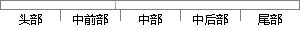

当使用者需要结束录音时，MMAPI告知设备录音结束并发送消息给回调函数处理最后的数据，然后释放缓冲区，最后关闭设备。
片段位置图

相似结果|
1
原句片段：当使用者需要结束录音时，MMAPI告知设备录音结束并发送消息给回调函数处理最后的数据，然后释放缓冲区，最后关闭设备。
相似片段 1：结束录音的流程为:告诉设备录音结束并发送WIM_DATA给回调函数让它处理最后的数据...关于MMAPI的回调函数: 这个回调函数是来处理消息的,一开始收到WIM_OPEN,最后...
|
※ 片段修改建议 ※
近似词参考：- 需要：必要
- 结束：竣事 收场
- 录音：灌音
- 告知：奉告 见告 示知 告诉
- 设备：装备 设置装备摆设
- 录音：灌音
- 结束：竣事 收场
- 消息：动静 新闻 音讯
- 处理：处置 处置惩罚
- 最后：末了
- 释放：开释
- 最后：末了
- 关闭：封闭
- 设备：装备 设置装备摆设
系统自动生成语句：当使用者必要竣事灌音时，MMAPI奉告装备灌音竣事并发送动静给回调函数处置末了的数据，然后开释缓冲区，末了封闭装备。
注：本片段修改建议为系统自动生成，仅供参考。